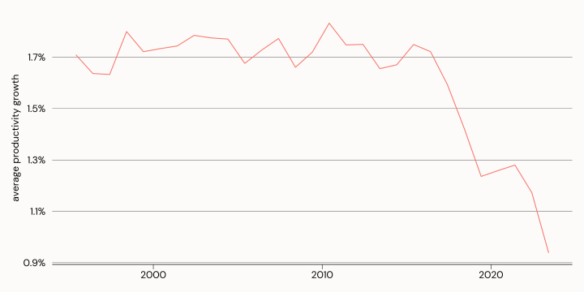

Understanding Economic Concepts
Hamish Gamble
Section 1: Hot Topics
BREAKING NEWS
Inflation Tumbles!
Inflation: Discussion
Why do economists care about inflation?
What is inflation measuring?
What does a decrease in inflation mean?
How does the video match your experience?
Productivity Disaster!
Productivity: Discussion
- Why do economists care about productivity?
- What is productivity measuring?
- Who benefits from increased productivity?
- What factors influence how productive you feel at work?
Section 2: Chatting Economics
The purpose of studying economics is not to acquire a set of ready-made answers to economic questions, but to learn how to avoid being deceived by economists.
Inflation (or, the Consumer Price Index)
- The CPI is a measure of changes in the price of a “basket” of goods and services.
- The basket includes (among other things):
- Food and non-alcoholic beverages, alcohol and tobacco and housing
- It represents the average inflation experience - and is not reflective of changes in cost of living.
Reporting Inflation - Index
- CPI data is reported as an index, or as a % change compared to the previous quarter, or previous year.
- an index shows how prices have changed relative to a value of 100 in a reference period.
Reporting Inflation - Percentage Change
- CPI data is reported as an index, or as a % change in since last month, last quarter, or last year.
- A percentage change measures the relative change in prices compared to another period.
Reporting Inflation

Inflation - By Type

Inflation - Cost of Living
| Change in living costs by product category | |
|---|---|
| % change between March 2025 and March 2024 | |
| Price Category | % change |
| Insurance and financial services | 8.2% |
| Alcohol and tobacco | 6.4% |
| Education | 6.0% |
| Health | 4.2% |
| All groups | 3.4% |
| Wages | 3.4% |
| Food and non-alcoholic beverages | 3.2% |
| Housing | 2.4% |
| Recreation and culture | 1.7% |
| Clothing and footwear | 1.6% |
| Furnishings, household equipment and services | 0.7% |
| Communication | 0.0% |
| Transport | −1.3% |
| Change in living costs by product category | |
|---|---|
| % change between March 2025 and March 2015 | |
| Price Category | % change |
| Alcohol and tobacco | 77.2% |
| Insurance and financial services | 69.9% |
| Health | 46.2% |
| Education | 42.1% |
| All groups | 34.3% |
| Transport | 32.6% |
| Food and non-alcoholic beverages | 31.3% |
| Wages | 28.7% |
| Housing | 26.4% |
| Furnishings, household equipment and services | 19.6% |
| Recreation and culture | 18.5% |
| Clothing and footwear | 1.4% |
| Communication | −20.9% |
Inflation - Wages

What Inflation Is Not
Inflation is not a measure of the cost of living.
Decreasing inflation does not mean prices have gone down.
Inflation is not more important than any other economic indicator.
Productivity
Productivity (or, output per hour worked)
- Labour Productivity is a measure of Gross Domestic Product per hour worked.
- But there are other inputs into production besides labour, including capital
- Changes in output can occur even without changes to input
Productivity - Measurement Issues
- It is relatively easy to measure and describe output per worker.
- Measuring output per unit of labour and capital is much more complicated, and questionable.
- What is a unit of labour-capital?
- Measuring productivity in the public sector basically shouldn’t be done.
- You would increase productivity in Education by reducing the number of teachers per student.
Productivity Trends

Productivity Trends - 20 Years
Productivity Trends


Productivity Trends - Workers Share
- If productivity is a measure of output per hour, it would only be fair to compare that with how much compensation (in real terms) workers are getting per hour.
Productivity Trends - Workers Share

Productivity Trends - Sector

Economic Anxiety
- How do you feel about the “big picture” economy?
- How do you feel about your economic situation?
- How do your mates, neighbours, or colleagues feel?
Tariffs
Definition
- A tariff is essentially a tax charged on imported goods.
- The tariff is paid by the importer, not the exporter.
- Increased costs for the importer will be passed on to the final consumer.
Tariffs in the US
The argument goes something like this:
The US is ‘taken advantage of’ by countries who export more to the US than the import.
Dependence on foreign goods undermines domestic industry.
Putting up tariffs reduces demand for imports and increases demand for domestic production (through price changes)
Increase demand restores America’s manufacturing base.
Tariffs to Protect Industry
Tariffs are not new.
- Protecting local industry has long played a role in capitalist development.
- Tariffs have been used to protect new industries in developing/industrialising countries.
- Britain relied on high tariffs to develop their industry. Once developed, tariffs were disavowed in favour of “free markets” and global trade.
Tariffs to Reindustrialise
America can probably extract concessions from the vassal states like South Korea and Japan.
- If you’re cynical, that might include Australia and the UK too.
But, the stated strategy is relying on automation, AI, and robotics to do the work - not people.
Globalisation means value chains are now spread across the world, so domestic prices will increase.
Without significant investment into domestic manufacturing, demand can’t actually be met by local industry.
Tariffs to Protect Capital
The rate of profit has a tendency to fall over time.
Seeking constant productivity growth, capitalist investment focuses on machinery and technology at the expense of labour - reducing profit.
US tariffs are intended to protect US capital from more productive or lower cost competitors, and to shift the burden of declining profitability off shore.
This is a temporary solution. The time could be used to develop comprehensive industry policy to revitalise production, or it could be used to keep the plates spinning a bit longer.
Section 3: Industrial Capabilities
What you make is what you know
Industrial Capabilities
- Core concepts:
- a country makes (or does) what it knows
- products (or activities) represent combinations of knowledge
- Capabilities are like letters in Scrabble
- The more you have, the more words you can make
- Rare letters create words worth more points
Products Embody Knowledge

An apple in the supermarket represents:
Horticulture
Pest control
Refrigeration
Logistics
Products Embody Knowledge

An iPhone represents:
- Semiconductors
- Software/Hardware Engineering
- Materials science
- Lenses
- Marketing
- Packaging
Measuring Industrial Capabilities
- Export data reveals what a country makes
- Comparison between countries reveals which capabilities are common, and which are rare
- The presence of different capabilities in different countries allows a ranking called the Economic Complexity Index
Why Does It Matter?
- The Economic Complexity Index is predictive of the direction of future economic growth.
- Countries with higher complexity are predicted to grow faster
- Useful tool to identify productive capabilities of a country.
- Can be used to identify future opportunities and direct strategy.
Why Does It Matter to Australia?

What Can Be Done?
Recognise that there is a problem.
The lack of sufficient existing capabilities requires explicit and direct industrial policy.
Understand the connection between just transition, decarbonisation, and reindustrialisation.
Develop a policy agenda which explicitly outlines existing and future opportunities, and how to get there.
Section 4: Economics and Economists
It’s the economy, stupid!
Economics
Economists
- Know it all
- Work in finance
- Kinda annoying
- Think that adding maths equations make their work more “real”

What is The Economy?
- Is the economy how much we produce in total?
- Is the economy how much we produce per person?
- Is the economy how well we meet the needs of society?
- Is the economy how well the stock market is performing?
Political Economy
Despite what economists would have you believe:
Economics is not an independent, neutral, or technical system
Economics is inherently linked to political ideology.
You can’t eat “headline inflation fell to 2.4%”
Political Economy - Modern Economics
“Classical” economics is associated with the development of capitalism and the industrial revolution in the late 1700 and early 1800s.
Marxism was a response to the horrible working conditions under which labour was subjected during the industrial revolution - and the associated disparity between capital class and working class.
Political Economy - Modern Economics
Class analysis was neglected in the late 1800s and early 1900s in favour of analysis of individuals. This is “Neo Classical” economics, and is what they teach at University.
When thinking of economics, remember that it is ideological:
What kind of growth do we want?
Efficiency for whom?
Who should get the benefits of increased productivity?
Work and Value
Everything in the economy comes from some combination of work and the natural environment, but only work can “add value”
There have been many attempts to define value - but clearly productive labour is the only source of it.
Capital is not inherently ‘productive’, despite being paid profit.